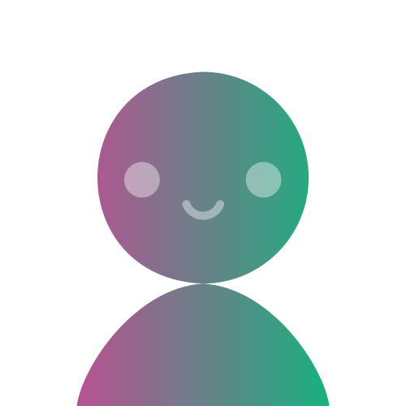

1
Web Developer Skills
General skills required
- Communication skills
- Problem Solving
- Teamwork / collaboration
- Planning
- Creativity
Top general skills that aren't included
- Writing
- Organisational skills
- Troubleshooting
IT-specific skills required
- Javascript
- Website Production
- HTML5
- CSS
- PHP
Top IT-specifc skills that aren't included
- SQL
- Windows
- Java
Has your opinion changed after looking at this data? (Princess)
My opinion on my ideal job hasn’t changed knowing that I’m still willing to improve these skills, especially the ones that are in demand such as communication and Problem-solving skills. I could also expand my knowledge for some of the IT specific skills such as learning JavaScript and PHP programming languages.
2
Software Developer Skills
General skills required
- Communication skills
- Problem Solving
- Teamwork / collaboration
- Mathematics
Top general skills that aren't included
- Writing
- Organizational skills
- Planning
IT-specific skills required
- Windows
- C#
- Python
- C++
- Agile development methodology
- Debugging
Top IT-specifc skills that aren't included
- SQL
- JavaScript
- Java
Has your opinion changed after looking at this data? (Chelsie)
My opinion towards becoming a software developer has not changed despite the data. I do understand that my ideal job requires me to learn a set of programming languages and I am willing to hone the skills I already possess to be qualified in the job such as the attention to detail, which can help with writing code and debugging.
Has your opinion changed after looking at this data? (Zachery)
This information has not changed my opinion about becoming a software developer. I have a long way to go in not only learning specific programming languages, but also with the general skills that are required, as I am inexperienced at working in a professional team environment and my organizational skills require much refining. However, my enjoyment of problem solving and mathematics still lead this to be an ideal job for myself

3
Cyber Security Specialist Skills
General skills required
- Communication skills
- Problem solving
- Detail orientated
- Presentation skills
Top general skills that aren't included
- Writing
- Organisational skills
- Teamwork / collaboration
IT-specific skills required
- Windows
- Java
- Linux
- C++
- Information security
- Network Security
Top IT-specifc skills that aren't included
- SQL
- JavaScript
- Building relationships
Has your opinion changed after looking at this data? (William)
No, my opinion hasn’t changed. Even though I will have to learn multiple different coding languages, operating systems and how networking works on a deeper level, I am still interested in building my skill sets to the point where I am qualified for this job. In fact, some of the general and IT-specific skills that I was not completely aware of being demanded for this kind of job are abilities that I already show interest in. For example, I enjoy designing presentations and going into detail and I am interested in the finer details of networking as I had to teach myself some of it when creating my own server.
4
Cyber Security Analyst Skills
General skills required
- Communication skills
- Problem solving
- Teamwork / collaboration
- Detail orientated
Top general skills that aren't included
- Writing
- Organisational skills
- Planning
IT-specific skills required
- Windows
- Linux
- Python
- Unix
- Web application development
- Information security
- Network security
- Bash
Top IT-specifc skills that aren't included
- SQL
- JavaScript
- Java
Has your opinion changed after looking at this data? (Tyler)
No, my opinion hasn’t changed as I am looking to push myself and learn more languages and like working as a part of a team as I know what my goals are. Having to learn all the different skills is an exciting prospect that I have always wanted to learn about.

Interview with Josh F.
Link to full interview
Please tell us about your IT work. What exactly do you do?
Josh works for (NMSP) Many service Providers, supplying corporate support to approximately 30- 40 businesses across Melbourne and offices across the country and a few overseas as well.
Please tell us about the industry you work in
They also call for IT supports, anything from window supports, up to employing in a tiny office including infrastructures, service support, cloud support across the entire businesses, any IT service required by their clients will come through them where appropriate. They limit themselves in terms of Telephony support, they are not involved in it just because it requires a far more specialist skill set
What other kinds of work do you have to do?
They do some programming and support products, and software supports, such as what many people find in many industries not just a simple as Microsoft Office but when people are paying 30,000 dollars - 100,000 dollars a year those sorts of software programs are usually supported by a distributor for that program. The common one that most people know is AutoCAD where there are 3 companies in Australia that if people want AutoCAD those are the 3 companies that they must go to and when they need support they speak to those companies and not to them. However, they tend to support those companies more often than the companies who are paid to do it. And then they do some programming and some website support as well even though it is not really under their purview. They do have some clients that have internal IT teams, and they also supply additional support to them, but they are often project-based work where it is entirely outside of the technical knowledge of the IT person onsite.
Who are all the different people you interact with in your work? Please tell us about them. (He also had answered Question 6 “interactions with clients or investors” in this question)
Primarily at the professional standpoint its on a support basis they would deal with other IT professionals when they are trying to supply a support to one of their clients and it overlaps with something that they manage on behalf of the client so whether that’s an infrastructure support whether that's working with an ISP to getting Internet setup at a new site or existing site, could also be the printer guys making sure that the networks are setup so that they can add their devices as required. A software support company when they are having issues they can work with them to resolve their problem.
Please tell us about your interactions with other IT professionals.
Josh interacts with other IT people, whom he met through the industry, and he also went onto other businesses, so he kept in touch with those people, not on a professional level but just support for a particular device software infrastructure.
What aspects of your work do you spend most time on? Please tell us about these.
Josh said that he probably spends most of his time on networking service support, such as deploying and maintaining new network service or troubleshooting within network or service.
Which aspects of your work do you find most challenging?
He states that the biggest challenges that he finds in the industry are:
- people’s ability to speak and communicate effectively to others as they can end up with people who are quite rude and abrupt, they mean nothing by it and just do not have people skills and end up causing more issues than it solves.
- The ability to manage clients rather than tickets and being able to convey what you need across multiple skill sets.
- The need to be able to cater to all forms of knowledge and they find it in their experience across the industry that's the biggest thing that people fall short of.
Finally, can you share an example of the work you do that best captures the essence of the IT industry?
There are two things with the essence of what they do:
- Fixing issues and problems
- Managing the people that are having the problems in which there are multiple ways they can handle a situation, you can be very abrupt and arrogant in a way of answering client questions or answering it in such a way that everybody feels like they had their issue heard, understood and fixed. As well as making sure that people are leaving on a positive note that they are willing to report any further issues to you down the track